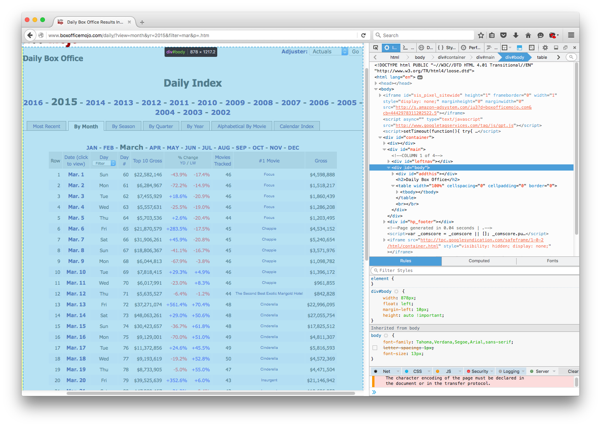
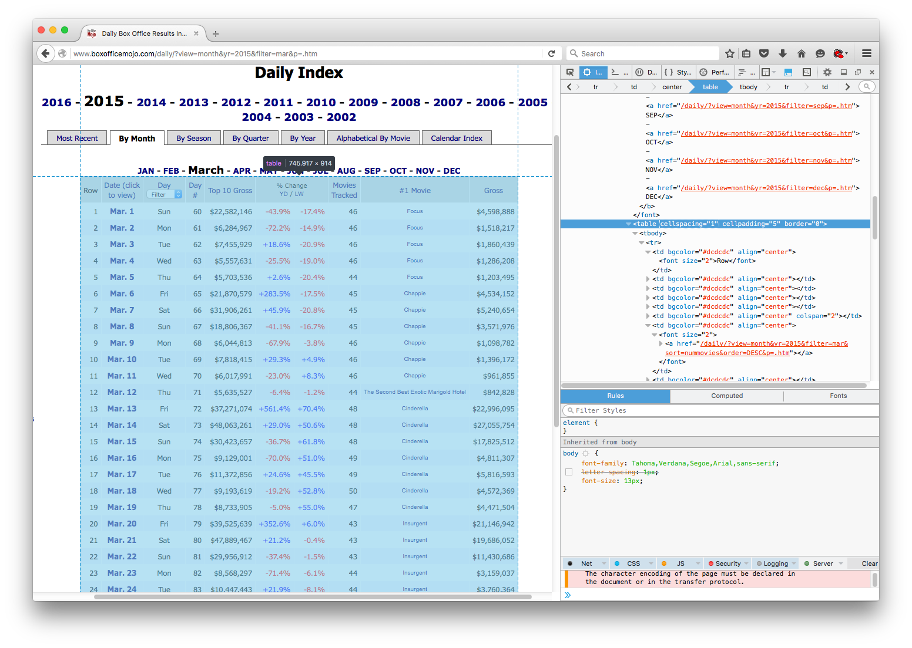
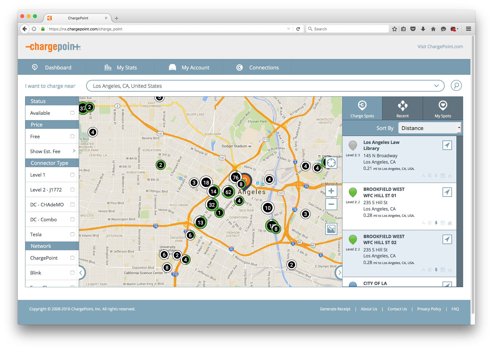
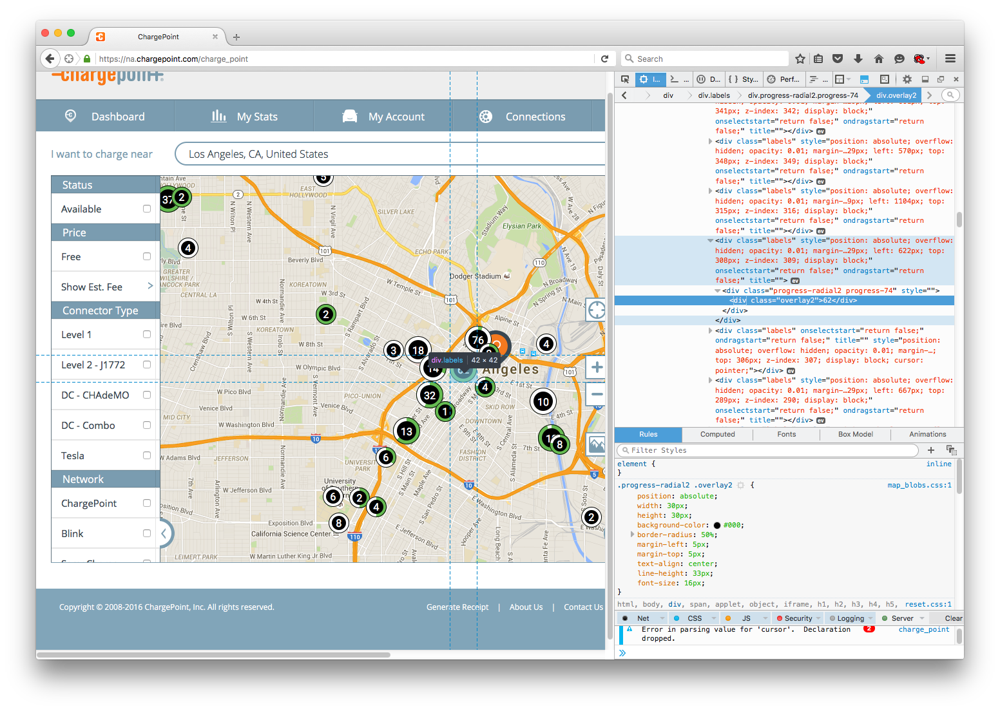
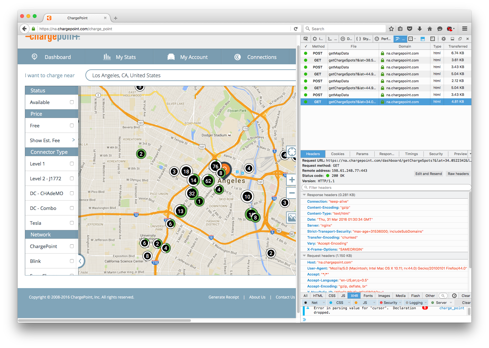
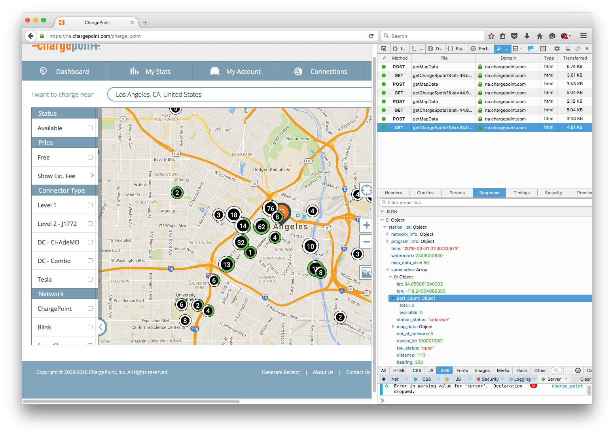

These examples were created for Joel Waldfogel's class on 29 March 2016. They are illustrative rather than optimized (not that I can necessarily produce optimal scraping code). They are meant to accompany slides, but I have added some extra notes to make them useful to look back on later.
# Imports
import pandas as pd
import requests
from bs4 import BeautifulSoup as bs
Basic Example¶
- Example switched to Box Office Mojo because the original required private account information.
Example Features¶
- Easy to see in website url what should be manipulated to access all desired sites
- Desired data nicely laid out on each page without variation in format
Scraping Goal¶
Suppose I would like to collect the Number 1 grossing movie worldwide and its gross revenue by day for all available dates. Box Office Mojo provides this information on their box office daily pages.
Step 1: Determine how to reach sites with desired data¶
The example site url above
http://www.boxofficemojo.com/daily/?view=month&yr=2015&filter=jan&p=.htm
suggests a simple pattern to changing parameters (In the next example we see that the url actually exposes the website's API to accessing these daily top grossers). Importantly yr= likely changes the year and filter= the month. Very little digging and clicking verifies the guess. For example,
http://www.boxofficemojo.com/daily/?view=month&yr=2013&filter=mar&p=.htm
is a link to the top daily movies in March 2013. Finally a few seconds of work indicates the values filter will take are: jan, feb, mar, apr, may, jun, jul, aug, sep, oct, nov, dec.
That should be all the information needed to access the data I want.
Step 2: Figure out how to access the data¶
Web Inspection¶
By first appearances the data look nicely laid out in an html table format, a best case scenario when trying to rip out data from its comfortable home on the web. Python, specifically the Beautiful Soup module, reads the web page as the text of the page source. The fun or usually frustrating part of this step is how to tell the module where to look for the desired data. Before transferring all work over to python, it is good to use the incredibly handy Web Inspector available on most browsers. I highly recommend Firefox for this work.
In the image below, I have my inspector on the right hand side of my browser. The box on the top right is the page source presented in a convenient format with expandable and collapsable nested elements. More importantly, as the cursor moves over various html elements, the relevant area on the web page is highlighted, as illustrated in the image below.

Even with very little knowledge of html, the tool makes it easy to figure out what data table looks like in the page source. Scrolling through I can eventually figure out where the table is in the page source, as illustrated below.
The reason html tables are so convenient, however, is that they have a common format across the web. In particular, they start with the table tag. The content of the table is nested in the tbody element (occasionally table headers reside elsewhere). The table format then lists rows (tr tag) with columns separately listed in each row (td tag). This format structure should be visible in the image below. The first column element is also expanded to expose that the text I want to extract resides in between the start and ending column tags. Notice the text Row.

Resource
One only requires limited html literacy to get started with this style of parsing and identifying elements in a webpage. Code Academy provides a good introduction that can be finished in one or two sittings.
Wrap Python Around the Problem¶
I have not closed my browser yet, but I have enough information to try to start the scraping process. I will start by making a test case for the March 2015 data going from the website to my pandas dataset before automating.
1) Get the page source¶
The Requests module fits most of my needs when trying to access content on the web. The online documentation is eventually worth a read, but basic usage is incredibly simple. Here, I want to get the content of the March 2015 daily gross data from Box Office Mojo, a feat which I accomplish by using the get function of the requests module. In this case the content my request will return is the page source (an html document) of the site I see in my browser when I follow the link. This will not be the case in the next example.
html = 'http://www.boxofficemojo.com/daily/?view=month&yr=2015&filter=mar&p=.htm'
r = requests.get(html) # Most sites can be accessed via the get function
r saves the response I got from my request to the site. The data I am interested in is accessible via the content attribute, i.e. r.content. Typing in r.content in python would return the entire html document. Just to illustrate that I indeed got the page source, I print the first few lines of the content I received. It can be matched up to the top of the html in my web inspector.
page_source = r.content
for line in page_source.split('\n')[:5]:
print line
2) Beautiful Soupify¶
With the page source in hand (saved in the variable page_source), I can now utilize Beautiful Soup. Notice at the top of the document I imported the BeautifulSoup function as bs. I have nothing against the function, save that the name is cumbersome to type.
The function will take as its argument an html page source (in string format) and spit out a easily navigable BeautifulSoup object, saved in page_soup. The second argument to the bs function is the parsing tool Beautiful Soup should use, here "lxml". The argument is not strictly necessary, but for newer web pages (those written in html5 format) "html5lib" should be used instead. Usually I figure out which is correct by trial and unexpected, unreasonable error.
page_soup = bs(page_source, "lxml")
The best way to get started with Beautiful Soup is to read the documentation. I will provide a crash course.
The main function I am interested in is find_all. The first argument of this function is an html tag. The function will then return a list of all elements in the page source beginning with that tag AND the nested elements. For example, I know I am interested in a table on the BOM site, an element which starts with tag "table". Hopefully, there is only one table in the whole document so I can parse the correct one.
print "The number of tables in the document is ", len(page_soup.find_all('table'))
A common problem is just specifying "table" will not guarantee I only pick up the table I want. Now I need to figure out some unique attribute of the specific table tag I want.
Tag attributes follow as XXX=value. For example, the table tag from above has three attributes: cellspacing (=1), cellpadding (=5), border (=0). Ideally the table would have some clearly obvious unique identifier, like an id or summary. Here, I will hope that one of these three attributes will do the job.
My Beautiful Soup object's find_all function can take a keyword argument attrs fed as a dictionary with the attribute name as the key and attribute value as corresponding value. For illustration I will try the find_all using each of the attributes of my table one at a time, though I could specify multiple attributes at once.
no_cell_space = len(page_soup.find_all('table', attrs={'cellspacing': '1'}))
print "The number of tables in the document with this cellspacing is ", no_cell_space
no_cell_pad = len(page_soup.find_all('table', attrs={'cellpadding': '5'}))
print "The number of tables in the document with this cellpadding is ", no_cell_pad
no_border = len(page_soup.find_all('table', attrs={'border': '0'}))
print "The number of tables in the document with this border is ", no_border
Specifying either the cellspacing or cellpadding seems to do the job. For a lengthy application I would feel uncomfortable assuming "cellpadding" will uniquely identify my table on all pages, but it is fine for illustration and happens to work in the end.
# Save the table from the list returned by find_all
table = page_soup.find_all('table', attrs={'cellspacing': '1'})[0]
The table variable is now just the part of the page source that is the table I want. At this point everything is smooth sailing since I already figured out how the table is laid out. The first of the rows, indicated with tr tags, is the header row, and all others contain the data I want. Before stripping the table I will illustrate how to loop through the table rows and columns using the first row of data, or the second row in the table.
data_row = table.find_all('tr')[1]
data_cols = data_row.find_all('td') # List of columns in the first data row
for column in data_cols:
print column.text # Access the text in each column
My ultimate goal is to save the data into a Pandas DataFrame to do some interesting analysis with the data. A good intermediate location to save the data, however, is a python dictionary. Below, I will create a dictionary of lists where the dictionary keys are the titles I want for my table headers. I will fill the dictionary by looping through the rows of the table and appending the text of the rows' columns to the appropriate list in this dictionary. Moving the data to a DataFrame is one extra step at the end.
Ultimately, the best method to save the data depends on the context.
# Set up the dictionary to save the data
output_columns = ['row', 'date', 'day', 'day_no', 'top10_gross', 'change_yesterday',
'change_lastweek', 'movies_tracked', 'top_movie', 'top_gross']
output = dict((x, []) for x in output_columns)
# Ignore the first row because it has the header data
all_rows = table.find_all('tr')[1:]
for row in all_rows:
row_cols = row.find_all('td')
# Loop through the columns and output keys to populate dictionary
for dict_key, col in zip(output_columns, row_cols):
output[dict_key].append(col.text)
# Put output into a DataFrame and rearrange columns in desired order
output_pd = pd.DataFrame(output)
output_pd = output_pd[output_columns]
output_pd['year'] = 2015
In the DataFrame the output is easy to manipulate. For now I just want to check that I retrieved my data as intended. Since the test case seems to have worked, I am almost ready for the final script.
output_pd.head(5)
3) Automation Prep¶
The only additional step I need to make in the automation is programmatically changing the site url. Creating the list of 'jan' through 'dec' and years 2015 to 2002 is easy using the python module itertools. For simplicity, however, I will construct this list using loops.
months = ['jan', 'feb', 'mar', 'apr', 'may', 'jun',
'jul', 'aug', 'sep', 'oct', 'nov', 'dec']
years = range(2002, 2016) # Note this list stops at 2015
month_years = []
for year in years:
for month in months:
month_years.append((month, year))
4) Final Script¶
Finally, I have everything I need to automate the whole process. Here is my script to download all the data, although I leave out the step saving the data to my local drive. The contents of the following cell should work in a standalone python script.
import pandas as pd
import requests
from bs4 import BeautifulSoup as bs
def get_site(month, year):
"""
Get the page source for BOM top daily gross corresponding to month and year
"""
html = 'http://www.boxofficemojo.com/daily/?view=month&yr={}&filter={}&p=.htm'.format(year, month)
r = requests.get(html) # Most sites can be accessed via the get function
return r.content
def parse_source(page_source):
"""
Given a page source, return a DataFrame with the parsed data
"""
page_soup = bs(page_source, "lxml")
table = page_soup.find_all('table', attrs={'cellspacing': '1'})[0]
output_columns = ['row', 'date', 'day', 'day_no', 'top10_gross', 'change_yesterday',
'change_lastweek', 'movies_tracked', 'top_movie', 'top_gross']
output = dict((x, []) for x in output_columns)
all_rows = table.find_all('tr')[1:]
for row in all_rows:
row_cols = row.find_all('td')
for dict_key, col in zip(output_columns, row_cols):
output[dict_key].append(col.text)
output_pd = pd.DataFrame(output)
output_pd = output_pd[output_columns]
return output_pd
# -- Main Loop
months = ['jan', 'feb', 'mar', 'apr', 'may', 'jun',
'jul', 'aug', 'sep', 'oct', 'nov', 'dec']
years = range(2002, 2016) # Note this list stops at 2015
month_years = []
for year in years:
for month in months:
month_years.append((month, year))
output = pd.DataFrame()
for month, year in month_years:
source = get_site(month, year)
source_out = parse_source(source)
source_out['year'] = year
output = output.append(source_out, ignore_index=True)
From here output can easily be saved to a number of data formats or manipulated as a DataFrame to clean up some of the data first, e.g. turning gross values into numbers rather than strings. Investing in pandas is worth it to facilitate handling the data once it is scraped and parsed.
For now, though, here is a simple example of how easy it is to go from scraping to analysis. Since 2002 which movies have maintained the top daily gross spot the longest?
topcount = output.groupby('top_movie').size() # Count how often the movie is the top
topcount.sort_values(ascending=False, inplace=True)
print topcount.head()
Second Example¶
Example Features¶
- Not obvious what url would lead to the site with desired data
- Desired data not cleanly laid out anywhere on web site (but must exist somehow!)
- API hunting
Scraping Goal¶
Chargepoint offers data on usage of charging stations throughout the day. I need the precise location of each charging station and its occupancy status. While I eventually want a program that can get all available data across California several times a day, I will illustrate here how to find and to access the desired data.
API Hunting¶
Initial Exploration¶
Trying to use the techniques from the first example will quickly come up short here. Below is a snapshot of the site.

The site aggregates many stations into bubbles on the embedded map indicating total stations and usage, the latter via the percent of the green ring colored out white. The data on the right is limited to only a few stations. I first check what the bubbles look like in the page source (via the Web Inspector) to see if there is any useful information.
The div element corresponding to the 62 stations has some potentially decipherable information, like pixel location, and the class "progress-radial2 progress-74" of the nested element could be used to tell me how many stations are currently occupied. There is no data to tell me precise station lcoations, however, and frankly translating pixel data into geo locations would be a nightmare.

I also notice that the url does not change with location. I can automate inserting addresses via a browser automator like Selenium, but that process is slow.
Web Traffic Exploration¶
Despite the mess that appears on the site visible to the public, I am optimistic the underlying data I want is transmitted from the web site's server before being aggregating into the bubbles I see. To test my theory I check the Network Tool tab in the same tool box housing the web inspector. The network tool captures all the requests my browser makes to the site's server, including any specific requests which might house the data I want.
With Firefox's network tool I can filter the mess of results that pop up. Generally, the "html" and "xhr" filters are the only relevant types that carry text data. I see my browser is making several get and post requests called "getMapData" and "getChargeSpots" which seem like reasonable places to find the data I want.
Inspecting these requests yields a wealth of information to sift through in the bottom panel of my network tab. I am interested in "Headers", "Params", and "Response."

The "Response" tab shows what the server is sending back from this particular request. Luckily I see that not only are the data I am looking in this response, but the data is returned in a nicely formatted JSON object. When I eventually use Requests, the JSON content will be returned to as a Python dictionary. First, I need to figure out how to access the content.

Under the "Headers" tab the enormous "Request URL" exposes the API to get this station data. I am looking for
- A base url
- Parameters of the request
Sometimes the "Request URL" is the base url (see "getMapData" in the network tool for an example); often the url already includes the parameters of the specific request. To extract the base url a good rule of thumb is just take everything before the first "?" in the "Request URL". Hence the base url is
https://na.chargepoint.com/dashboard/getChargeSpots
The final relevant tab is "Params." It should show the settings of all the parameters in the specific request.
Moving to Python¶
The only additional function of Requests I need to use now is the params keyword argument of the get function. Params takes a dictionary argument -- though some websites could require a JSON argument -- as illustrated below. To construct my initial parameters, I just copied the keys and values over from network tool.
base_html = 'https://na.chargepoint.com/dashboard/getChargeSpots'
param = {'_': '1458059736670', 'community': 'true',
'driver_filters': 'false', 'f_available': 'false',
'f_blink': 'false', 'f_chademo': 'false', 'f_cp': 'false',
'f_estimationfee': 'false', 'f_evgo': 'false', 'f_free': 'false',
'f_l1': 'false', 'f_l2': 'false', 'f_saecombo': 'false',
'f_semacharge': 'false', 'f_tesla': 'false',
'lat': '34.0522342', 'lng': '-118.2436849',
'ne_lat': '34.09489130878547', 'ne_lng': '-118.13030256052247',
'sw_lat': '34.00955561686954', 'sw_lng': '-118.35706723947754',
'non_community': 'true', 'scHeight': '870', 'scWidth': '1369',
'search_lat': '34.0522342', 'search_lng': '-118.2436849',
'show_mode1_only': 'false', 'show_mode2_only': 'false',
'sort_by': 'distance', 'user_lat': '44.9694657',
'user_lng': '-93.2443818'}
It is then straightforward to apply this to the get function.
As a side note, another important Requests function is "post". Some server data might be accessed via the "post" method rather than "get" method. Notice the network tool also indicates which method should be used by "Request method" under the "Headers" tab. "getMapData", for example, uses POST instead of GET.
r = requests.get(base_html, params=param)
Instead of using the content attribute of r, which will return the JSON data in a string, I can bypass the step and take advantage of the json method.
station_results = r.json()
When I looked at the response of this request in Firefox, I noticed I had to drill down a few levels to get to the charging station summaries I actually needed. station_results is not a format immediately compatible with a DataFrame, but the list of stations happens to work out somewhat nicely in this case.
Looking at the result some data is still in an odd format, e.g. address and the data I want in port count, but this issue can easily be fixed up with Pandas later. For now, I am happy to simply collect the results.
station_data = station_results[0]['station_list']['summaries']
station_data = pd.DataFrame(station_data)
print station_data.iloc[0]
Using the API¶
I managed to collect the data for the specific example I took from my browser, but I still need to figure out how to manipulate the parameters of my request to find the station data for arbitrary locations. A bit of experimentation reveals I need to change the "ne_lat", "ne_lng", "sw_lat", "sw_lng" parameters (oddly not "lat" and "lng"), which should be specifying the rectangle within which the server is providing me with station data.
def get_stationdata(ne_lng, ne_lat, sw_lng, sw_lat):
"""
Function adjusts the station search bounding box and returns a list of station data
"""
# Retrieve
base_html = 'https://na.chargepoint.com/dashboard/getChargeSpots'
param['ne_lng'] = ne_lng
param['ne_lat'] = ne_lat
param['sw_lng'] = sw_lng
param['sw_lat'] = sw_lat
r = requests.get(base_html, params=param)
return r.json()[0]['station_list']['summaries']
sample = get_stationdata(-122.346666667, 39.1851851852, -123.373333333, 38.8333333333)
sample = pd.DataFrame(sample)
print sample.iloc[0]
Final Notes on Automation¶
In some ways this example is a bit easier to handle than the first because the API returns the data in a relatively easy to manage format. To automate collecting the data over all of California is ultimately much more challenging than the automation process for the first example.
Besides devising a grid of northeast lat-long and southwest lat-long for my search boxes, I also notice another obstacle common to some APIs. At most the server will give me the full data on 50 charging stations at a time. The way to handle this capped-data problem is to submit more restrictive search parameters; in this case, I need to provide small search areas in high density areas. Some APIs are nice and give you a way to request the specific "page" of results. This one was not.
In the end I have a product that can scrape the occupancy status of over 9000 station charging stations in around 2 minutes.
Comments